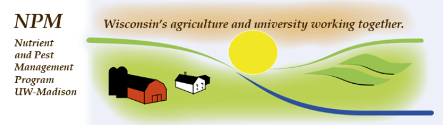
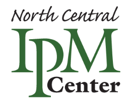
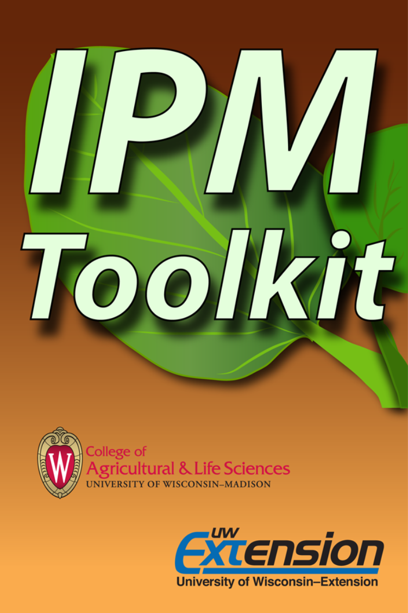

Integrated Pest Management (IPM) Toolkit
This app allows you to read news articles, view videos, download publications, and access pictures which will aid you in adapting Integrated Pest Management (IPM) practices to your agricultural operation.
IPM is a sustainable approach that helps farmers combine the use of pest prevention, avoidance, monitoring and pest suppression strategies, minimizing economic, health and environmental risks.
How to use this app:
The "News" tab contains two sources of news: Crop Manager and Twitter. Crop Manager reports Wisconsin Crop Manager articles from the ipcm.wisc.edu website. Twitter contains a list of tweets from selected users who tweet about crop-related news.
New in version 1.1: You can now add your own RSS feeds to the Crop Manager tab of the News screen and your own Twitter lists to the Twitter tab. Use this feature to diversify your feeds.
Note: If you have trouble adding a Twitter feed, be extra sure that you are typing the correct username and list name.
The "Videos" tab lets you view short IPM and crop management videos hosted on YouTube. Choose a playlist category and scroll through the list of videos.
Also new in version 1.1: You can add your own YouTube channels to the Videos tab.
The "Publications" tab contains a list of IPM-related publications that you can download to your device. The list contains primarily PDF documents, but also has some ePub books.
The "Pictures" tab lets you browse and search through thousands of collections of images hosted at www.IPMimages.org. The app comes with a "featured collection" already saved in the list area where you can save your own custom searches. We will update images in the featured collection throughout the year. However, the main feature of the pictures tab is your ability to search for pest images on your own.
When you tap in the search input box, you type in the common or scientific name for a pest of interest to you. You may search using a partial name by typing in at least three letters and tapping a search suggestion provided to you. You can select the "starts with" or "contains" button to indicate how you would like search suggestions to be provided.
When the list of pictures is returned, simply tap a picture to view it in full-screen and swipe left or right to scroll between pictures in the list.
Version 1.0
This app was developed by the UW-Madison Integrated Pest Management (IPM) program. We would like to acknowledge the following individuals who helped on this project:
Roger Schmidt, NPM Computer Specialist
Bryan Jensen, IPM Specialist
Ramsey Statz, NPM Computer Programmer
John Schmidt, NPM Computer Programmer
Pictures are from the Bugwood Image Database System at the Center for Invasive Species and Ecosystem Health, University of Georgia - Tifton, GA. Photographers who add their images to the Bugwood Image database have already given their permission for their images to be used for personal or educational use; therefore, you do not need to get additional permission to use the images. However, if the images are being used for commercial use, then you do need permission to use the images. Visit http://images.bugwood.org for further information or to contribute your own images.
We greatly thank the North Central IPM Center (Subaward No. 2007-0497-36) for providing financial support for this project.
Copyright © 2014 Board of Regents of the University of Wisconsin System
